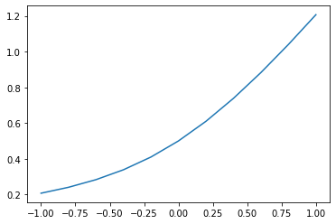

quant_documentation package¶
Submodules¶
quant_documentation.hyperbolic module¶
-
hyperbolic(x)[source]¶ Using the hyperbolic function
\[f(x) = \frac{1}{2} \left(x + \sqrt{1 + x^2} \right)\]- Args:
x (tensor(shape=(…))): M-dimensional tensor
- Returns:
y (tensor(shape=(…))): Hyperbolic function
import matplotlib.pyplot as plt import quant_documentation.hyperbolic as hyperbolic import numpy as np x = np.linspace(-1.0,1.0,11) y = hyperbolic.hyperbolic(x) plt.plot(x,y)
[<matplotlib.lines.Line2D at 0x2bd11933048>]